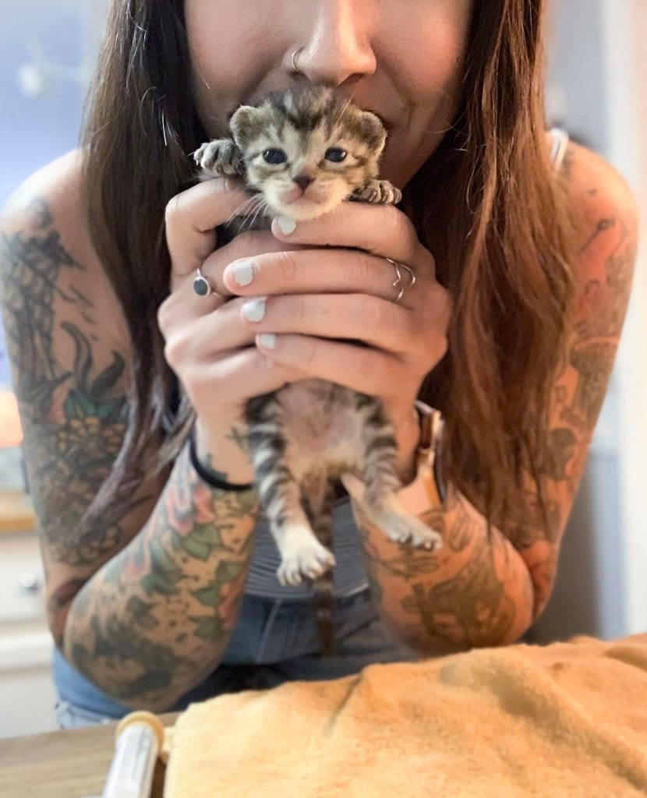
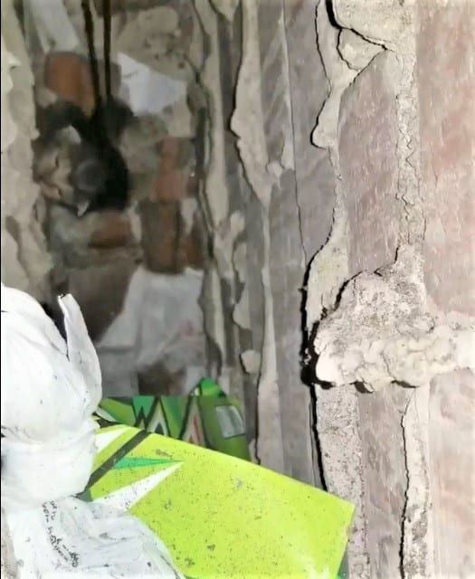
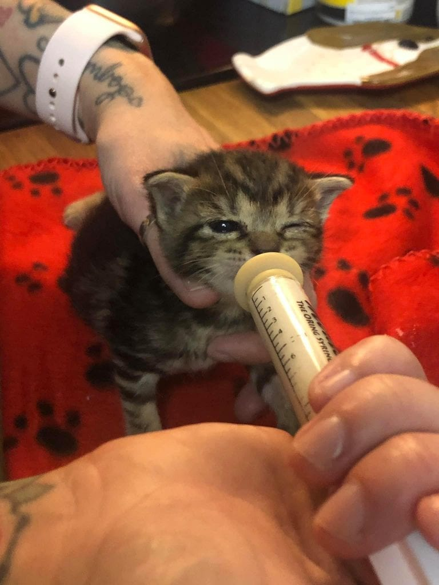
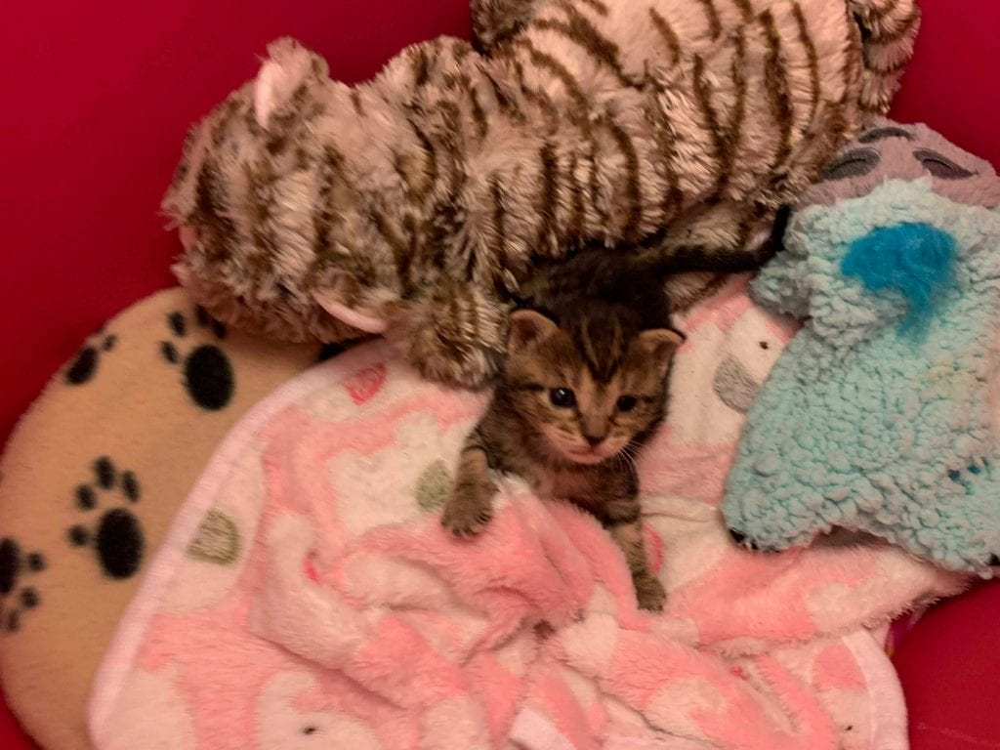

Mornings For Baby Kitten “Oatmeal” Much Brighter After Being Fished From Within Hotel Walls!
The staff and guests at the Belmont Inn in Port Richey, Florida had to deal with an uninvited guest last week, later named Oatmeal. Thankfully, this purrticular guest didn’t take up much space. But this mini-visitor had made themselves home in a dangerous portion of the hotel–within the walls! And when they discovered the tiny trespasser, without their assistance, she would have never checked out.
{kind=link}
Meet Oatmeal, the little girl found within the walls of the Inn.
Apparently she had been calling for room service at the top of her little lungs. Two human visitors, Josh and Christin had heard her pleas and tracked her down to the wall. But she was well out of everyone reach. And in the slim opening that she was stuck in, they had to come up with a rescue plan.
{kind=link}
But they also had to contend with the trash that lined the bottom of the crevice. Not to mention the jagged pieces of concrete that lined the walls. They couldn’t see if she had any injuries that would be from a fall into those depths. She clearly seemed to be alert, hungry and very scared.
{kind=link}
When their attempts continued to fail, they refused to give up while trying to think outside the box. Or in this case the wall. So they looped a piece of thick fishing line and dove in! Watch the full rescue video below!
Once little Oatmeal was fished from the depths, the next challenge presented itself.
She was only about 8-9 days old at the time of her rescue, eyes just opening. At that age, she requires bottle feeding every 2-3 hours! Of course, that’s not something that everyone has the experience to feel comfortable doing. And when you have a newborn kitten, their health can change in a moments notice.
{kind=link}
So it was a long and unsuccessful night of trying to bottle feed little Oatmeal that first day. They knew they needed to find someone who was experienced in raising and fostering kittens. Luckily, their friend Melissa, knew of the purrfect person–Dani the Cat Lady. 
{kind=link}
She reached out to Dani on Facebook and told her of the amazing tale. Dani was quick to join the rescue team. Oatmeal joined her foster family and resident mentor felines on Monday, October 7th, 2019.
Dani also asked them to be on the lookout for any other siblings or mama cat in the area. Many times, mama cats will move a newborn family to a safer area. And it’s not the first time a kitten was left behind or lost during these transitions. But good and bad, they’ve not found any more felines to date.
Now, each morning starts with a big scoop of Oatmeal kisses in Dani’s foster home.
At only 7.6 ounces, she’s even gone on her first shopping excursion! You know how girls are–HAHA! Dani says she’s got a spicy little personality too.
I just love her feisty personality and her cute swirly markings üñ§
{kind=link}
When she’s not treating everyone to a bit of adorable sass, she’s utterly captivating. And yes, I mean legitimately every other second of the day. Sleeping, rolling around with her little potato belly or learning how to play.It’s how we should ALL start our mornings!
{kind=link}
Be sure to follow Dani the Cat Lady on Facebook and Instagram for your daily dose of kitten therapy.
If you would like to make a donation from Dani’s wishlist for Oatmeal or the other deserving felines in her care, the link is https://linktr.ee/danithecatlady.